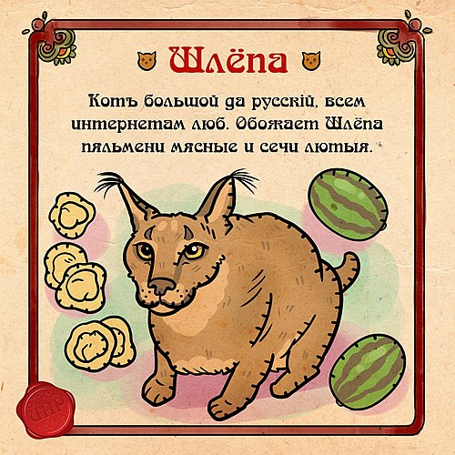

Блогер
Биография и семья
Настоящая кличка каракала — Гоша. Он родился 21 декабря 2017 года в киевском кошачьем питомнике. В возрасте четырёх месяцев за 8000 долларов его приобрела семья Бондаревых — Андрей и Елена — из Москвы. По воспоминаниям Елены, в питомнике у Гоши было другое имя — скорее всего, Миша. У каракала есть родная сестра, которая также живёт в столице. Кроме каракала в семье Бондаревых живет мейн-кун Жора, родившийся в 2015 или 2016 году. До недавнего времени вместе с ними жил кот Матвей. Он был взят из приюта в начале 2010-х годов. 24 сентября 2022 года Матвея не стало. Гоша страдает ожирением — его масса составляет около 30 килограммов, питается сырым мясом (индейки, кролики), кормовыми крысами и креветками в виде лакомства. На питание котов в месяц уходит в среднем 300 долларов. Осенью 2021 года семья задумалась о переезде в Тульскую область, так как содержать каракала в квартире, как говорит Елена Бондарева, «неплохо, но неправильно». Начало постройки дома запланировано на весну 2022 года.
Floppa
Популярность
В декабре 2019 года владельцы каракала опубликовали в своём инстаграме фото, где он лежит на подоконнике вместе с котом Жорой. Впоследствии именно этот снимок стал первым шаблоном для мемов с каракалом. Первыми на фотографию обратили внимание авторы ироничных инстаграм-аккаунтов, которые сначала дали Гоше прозвище «big sahnr» (или просто «sahnr»). В январе 2020 года за свои большие уши Гоша получил прозвище Big Floppa (от англ. flop — «шлепок»), под которым впоследствии и стал известен. В феврале 2020 года был опубликован первый мем, набравший большую популярность, — демотиватор с отредактированной фотографией Гоши, где он изображён без ушей. Картинка распространилась по другим аккаунтам, специализирующимся по интернет-мемам. К маю мемы со Шлёпой распространились за пределы Инстаграма — шутки про каракала стали публиковать в Твиттере и на Реддите. Летом популярность мема дошла до рунета, где по аналогии с Big Floppa Гоша получил прозвище Большой Шлёпа. К концу 2020 года Шлёпе было посвящено большое число фанатских сообществ и аккаунтов на Реддите, во «ВКонтакте», Твиттере и Инстаграме, где каракала называют «источником подражания» и «лидером молодёжи», а также каждую пятницу отмечают «пятницу Шлёпы». В комментариях к публикациям хозяев Гоши пользователи интересуются жизнью каракала, высказывают удивление его размерами, всячески обыгрывают его прозвище. 
«Лубок» со Шлёпой — пример интернет-творчества